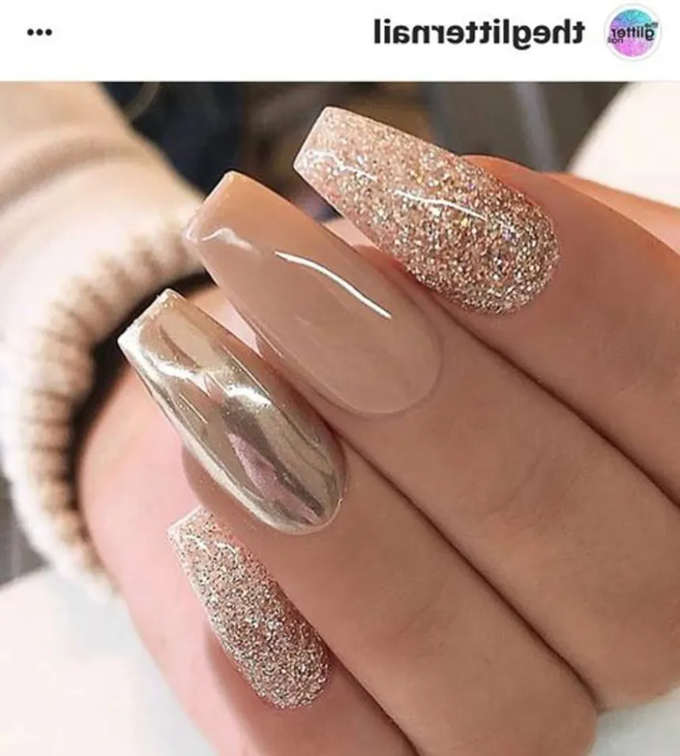
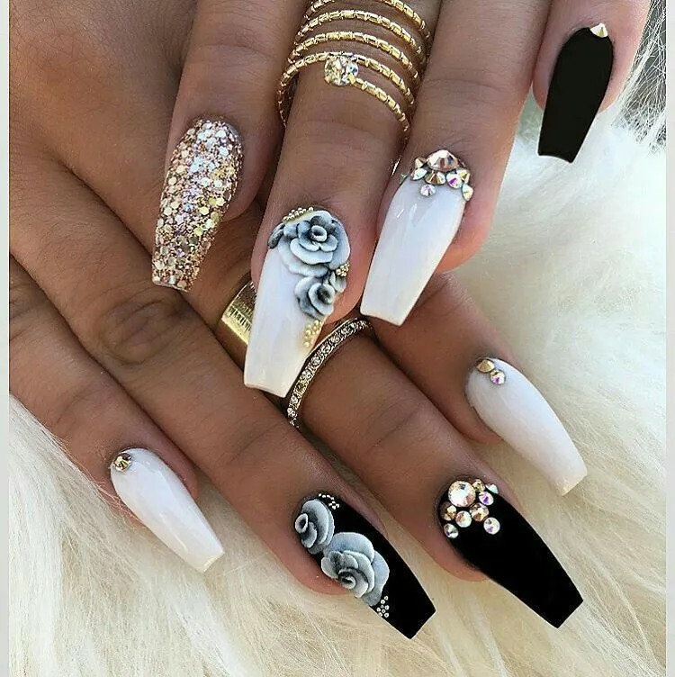
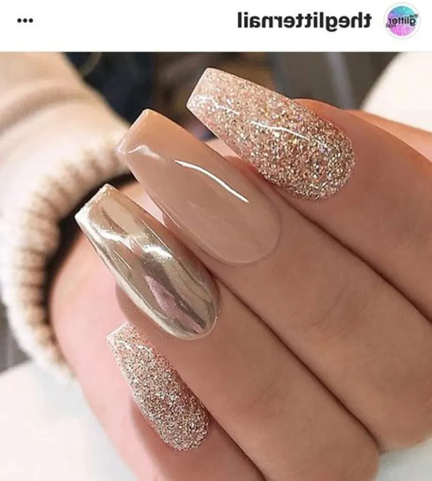
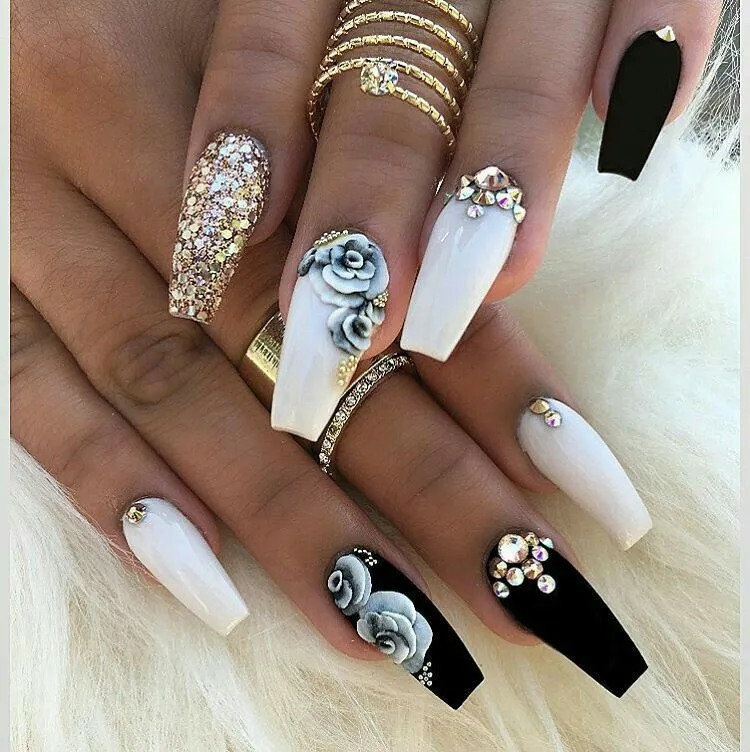
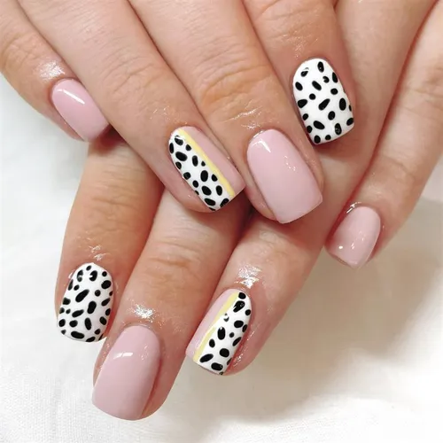
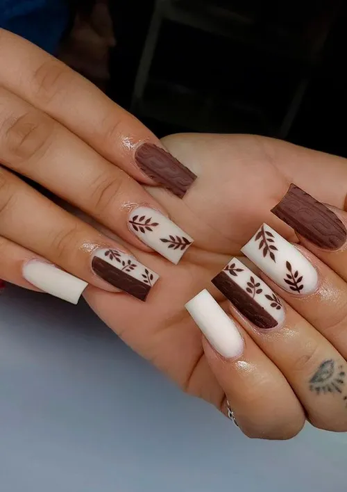
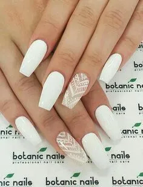

Esta página web es representada por NailsLuz para poder compartir todo lo relacionado con las uñas, como diseños, colocaciones, hidrataciones, etc.
¡Veni a hacerte las uñas!
Tipos de uñas
- Sofgel
- Acrilico
- Polygel
- Acrigel
- Semipermente
- Kaping
 






Instrucciones paso a paso Semipermente
- Preparar uñas: Limpiar, empujar cutículas y limar.
- Limpiar superficie: Usar limpiador o alcohol para eliminar residuos.
- Aplicar base coat: Cubrir la uña, sellar bordes y curar con lámpara UV/LED.
- Aplicar color: Pintar en capas finas, sellar bordes y curar con lámpara.
- Aplicar top coat: Sellar y curar nuevamente.
- Eliminar capa pegajosa: Usar limpiador o alcohol.
- Hidratar: Aplicar aceite para cutículas.